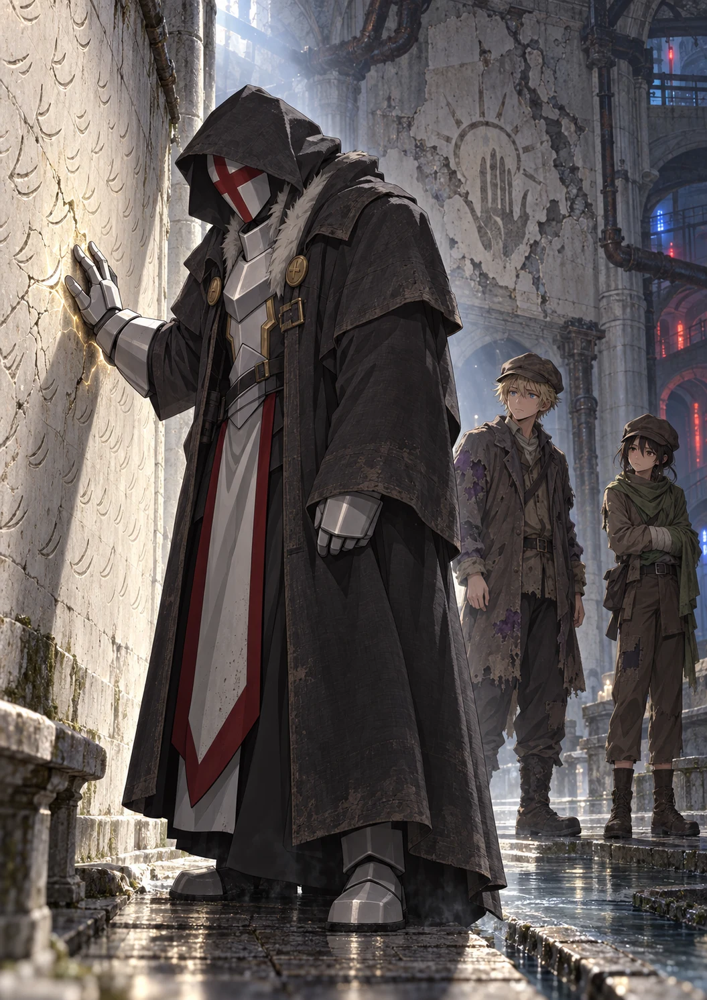
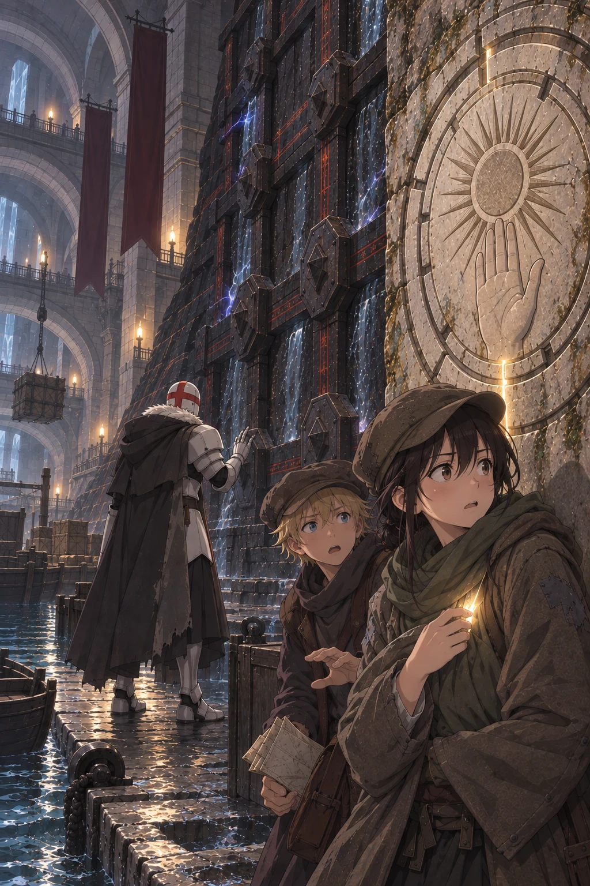

Volume One · Chapter Five
The Severance
The warning bells followed them underground.
Three low strokes.
A pause.
One high.
The sound passed through the runoff conduit in long vibrations, too deep to belong to any single tower. Water trembled in the cracks between bricks. Dust sifted from the curved ceiling and settled over Ultimos’s shoulders without touching the white armor hidden beneath his damaged coat.
Orin crouched as he walked. The conduit had been designed for storm water, not fugitives, and every few steps the roof dipped low enough to scrape his cap. His borrowed boot splashed through an inch of freezing water. Behind him, Kisaya breathed through her teeth whenever her injured arm struck the wall.
The channel carried rainwater and reservoir overflow rather than household waste. Its brick still smelled of silt, mineral damp, and the canal above.
Ahead, Ultimos moved without sound.
The lightning mage had burned three black rents through his disguise in the Hall of Liberation. Thin edges of white armor showed beneath them. As Orin watched, pale lines passed across the charcoal cloth. The torn edges lifted, drew together, and sealed. Soot darkened the repaired weave until the coat became whole again.
Ultimos never slowed.
The bells began another sequence.
Kisaya’s last answer followed Orin underground.
They know what you did.
Orin still felt no safer. The city hunted them for what Ultimos had done, and he had no idea what the white mage might do next.
“Then tell us,” Orin said. “What are you?”
His voice struck the narrow brick and came back sounding more certain than he felt.
Ultimos continued to the next junction. “Which route?”
Orin pulled the request slip from his sleeve. The charcoal marks had blurred where canal water reached the paper, but he could still distinguish the line he had copied from the old survey.
“Left. We should pass beneath the reservoir, then turn east at the broken overflow.”
Ultimos took the left passage.
Kisaya ducked beneath a low pipe. “In the ruins, you called yourself Grand. The bearded Warden had read enough to be frightened. Half the hall thought you were wearing a costume until you erased their captain. Start there.”
Orin folded the damp paper around two fingers. “We need to know what is in this tunnel with us.”
Ultimos stopped at the broken overflow.
Water spilled through a split iron pipe and vanished into a grate below. Beyond it, three passages descended at different angles. Ultimos studied the old brickwork, then the newer metal channels hammered into its seams.
“The city has classified observed danger, not recovered history,” Ultimos said. “Its response could be used against any caster its district forces failed to contain.”
Kisaya frowned. “That does not answer Grand.”
“No. Grand was ours. It marked mages trusted to teach masters and direct them in crisis.”
“And Lord?” Orin asked.
“A civic office. I held regional authority here.”
He selected the eastern passage.
That told Orin almost nothing. Veyr did not understand what it was hunting, and neither did he.
Ultimos stepped over the broken pipe.
“We’re still checking the outlet first?” Orin asked.
“Yes.”
“And then?”
“If it can be secured, the same network carries me back beneath the Spire without crossing the central streets.”
Kisaya adjusted her injured arm. “So the northern route isn’t where you’re going.”
“It is how I intend to leave with whatever I find.”
“You require enough truth to recognize what follows,” he said. “Very well.”
Kisaya exchanged a glance with Orin.
Ultimos meant to correct only the portion of their ignorance that interfered with his plans.
For now, that was enough.
They went east.
The sound of the city thinned behind them. Brick sweated around the first two turns. Roots had entered through the mortar and swollen into pale knots overhead. Then, exactly where the copied survey predicted, the passage changed.
White stone replaced the brick in a line so clean it might have been laid that morning.
The walls widened. The ceiling rose above Ultimos’s head. Shallow channels ran along both sides of the floor, dry despite the water behind them, and a many-rayed sun repeated at intervals beneath four centuries of hammer scars.
The runoff thinned to nothing at the seam. They had left the modern drainage conduits and entered the older civic network preserved beneath them.
Ultimos placed one hand against the nearest wall.
“This carried the northern waterworks beneath the eastern court,” he said.
“Toward what is now beneath the Spire?” Orin asked.
“Toward the central halls that stood there before it. There was no Spire.”
His hand left the stone.
They followed the passage around a long curve.
The containment barrier waited beyond it.
Dark stone sealed the corridor, threaded with red veins and crossed by iron braces that entered the reservoir foundation. Pressurized water hummed inside its joins. Wind wheels carried blue sparks between anchors while black fire watched the floor.
Four elemental systems had agreed to become one wall.
Ultimos approached until the fire reflected along the lower edge of his helmet.
He touched one iron brace with his smallest finger.
A point of white entered the metal.
The nearest wind wheel brightened.
Ultimos withdrew before the light completed a turn. The blue spark faded, but not entirely. It continued circling the anchor as though searching for whatever had disturbed it.
Kisaya stood well back. “Can you break it?”
“Easily.”
“Then why are we looking at it?”
Ultimos indicated the braces and turning wheels. “It is anchored through the reservoir wall and reports to a larger network. Any element will signal the failure of the others.”
Orin pictured stone shifting beneath houses. A reservoir emptying into buried streets. Every message lantern in Veyr showing their location at once.
“So breaking it would be loud,” he said.
“Power is not the difficulty. Silence is.”
Ultimos looked toward a narrow maintenance opening half hidden behind the final white pillar.
The old door had been removed. Newer tracks ran through the dust beyond it.
“We go around.”
Orin checked the copied line. The maintenance branch curved around the reservoir, descended, and doubled back toward the northern outlet.
They entered single file.
The branch was scarcely wider than Orin’s shoulders. Iron pipes crowded one wall, and corroded handles projected at inconvenient heights. Ultimos led with his hood lowered over the repaired coat. Orin followed. Kisaya came last, one hand pressed over the disk beneath her jacket whenever she had to turn sideways.
They had gone perhaps forty paces when metal struck stone ahead.
Ultimos stopped.
Voices descended through an inspection shaft.
“—lower branch clear.”
“Keep your ward seated. The order said continuous protection.”
“I heard the order.”
Blue light spilled around the next corner.
Ultimos looked once at Orin.
Orin unfolded the request slip. The old survey showed a service channel branching before the barrier, but the wall ahead appeared unbroken.
He searched the stone.
A vertical seam hid behind three pipes.
“There,” he whispered.
Ultimos moved toward it.
Three people rounded the corner first.
The leading Warden wore an earth-marked chain and a close brown ward. A water mage followed, then a wind witch carrying a black-glass focus that pulsed with the pipes.
All three saw Ultimos.
None laughed.
“Rogue-caster contact,” the witch said. Her voice remained level. “Northern lower maintenance. Three subjects.”
She stepped toward a metal bracket mounted beside the wall.
“Do not seat that focus,” Ultimos said.
The earth mage planted one boot. Stone gathered over both forearms.
“Hands visible. The children move behind us. You will submit to full binding.”
“No.”
He gave the order no more consideration than that.
The witch drove the black glass toward the bracket.
Kisaya seized the nearest corroded handle, kicked the wall for leverage, and dragged it down.
An iron inspection shutter dropped between the focus and the relay.
The point of the black glass entered the bracket a fraction before the shutter struck. Iron sheared it from the witch’s hand. The broken tip remained in the relay, glowing red.
A pulse escaped into the pipes.
The witch snatched back what remained of her focus. “Containment seated.”
Metal answered in both directions. A gate struck the floor behind the patrol. Water drew backward through the pipes beside Orin, filling them with a low, rising hum.
The earth mage punched both hands toward the floor.
Stone rose across the hidden seam Orin had found.
“That is the route!”
White light separated every line the earth spell had joined. Blocks fell inward without striking one another.
The water mage caught the nearest pipe in both hands. Blue light ran from his wrists into its joins. Instead of drawing the water out as a weapon, he fed his magic into the system until the hum became a shudder beneath Orin’s feet.
Ultimos stepped through the opened seam. “Move.”
Reservoir water punched from a round vent and threw Orin against the wall. Kisaya caught his coat before the current could carry him back into the corridor. A second vent opened above them. Then a third.
An iron shutter descended across the hidden passage.
Ultimos caught it. The impact drove his boots into the floor. Red wards spread from the frame and searched his gauntlets, but he answered them with no light.
“Under.”
Kisaya slid beneath. Orin followed through the water. Three corroded control handles waited on the other side, beside a relief arch half buried in mineral crust.
Behind Ultimos, the witch threw aside her broken focus. Wind narrowed between her hands into a transparent line aimed past him at the children.
“Stop,” Ultimos said.
She released it.
One of his hands remained beneath the shutter. The other moved. One small burst opened the wind from end to end. A second crossed the space between them.
The witch vanished before her spell reached the floor.
Her focus struck the flooded floor in two black pieces.
“Which handle?” Kisaya shouted.
Orin dragged out the survey. Water had blurred the charcoal beside the branch, but the lowest line still descended before curving north.
“Lowest.”
Kisaya seized it. The handle moved halfway and caught. Orin added his weight. Together they tore the rusted pin free.
The relief arch opened.
Water changed direction so violently that Orin lost his grip. It roared past the shutter and into the side channel, dragging the water mage from the pipe. The earth mage drove one arm into the wall. Stone closed around his elbow, anchoring him long enough to catch his companion by the back of the coat.
He did not look back for the witch.
The pressure fell. Ultimos ducked beneath the iron and released it.
The shutter struck the floor. Its red lines found no broken ward. Stone ground against the other side once, then stopped.
Orin lay in the shallow rushing water with the survey plastered beneath one hand. The patrol had offered surrender as rescue. Then they had sealed the corridor around them. When he and Kisaya found a way through, the witch had aimed through Ultimos to stop them.
Without his light, the wind would have opened both their throats.
Beyond the shutter, the surviving Wardens had not surrendered. They knew which passage the fugitives had taken, and the containment network had carried word of the breach deeper beneath the reservoir.
The hidden passage descended sharply. Orin kept expecting stone to split behind them, but only the retreating water followed them to the bottom.
At the bottom, the passage opened into a circular chamber where six waterways met. Five lay dry; the water following them spread thinly across the sixth and drained through cracks between the stones. Broken benches curved along one wall. Generations of workers had driven nails into a ruined central pillar, but an open hand remained beneath the rusted wire, and hundreds of three-curve healing patterns covered the stone behind the benches.
Here, unlike Nema’s damaged inheritance, the curves were complete.
“A waystation?” Orin asked.
“A practice court.”
Ultimos crossed to one novice’s attempt. Its last curve ended too sharply and had split the stone around it.
Orin remained near the entrance. The failed wind spell still chilled his face. “You found the burned boy’s form and restored it. What did you do to hers?”
“The same discipline.”
Kisaya’s expression hardened. “Healing and that are the same magic?”
“Different uses of the same understanding. Anything that remains whole possesses relationships that hold it together. White magic works upon them.”
Ultimos touched the split beside the novice mark. The stone closed beneath his thumb without changing the student’s imperfect curve.
“The boy’s living form still carried the pattern of an uninjured hand,” he said. “I followed it.”
“And she?” Orin asked.
“I broke the relationships that allowed her form to remain coherent. Destruction requires less understanding than correct repair.”
“So every white mage could erase people.”
“Black magic can kill just as readily. Capacity is not mastery.”
Orin looked at the complete healing emblem. “Nema draws on it without knowing its name.”
“Her pattern reaches the Meridian. The knowledge of what it touches was lost before it reached her.”
“I thought the Meridian was a place.”
“You found me in a Meridian temple. Such temples were built where its currents could be focused. The Meridian itself is the force through which form can be worked.”
Ultimos left the mended lesson and took the eastern channel. Orin and Kisaya followed.
“You said Lord meant you held authority here,” Kisaya said. “So the stories about white mages ruling Veyr are true.”
Ultimos did not slow. “We held authority. That does not make their history true.”
“Did people get to refuse you?”
“Refuse what?”
“Whatever you decided was for their own good.”
He looked at her then.
Kisaya nodded toward the old channels. “Suppose the Order decided a street had to be emptied before it rebuilt the foundations. Suppose the people living there didn’t want to leave.”
“They were removed.”
“Against their will?”
“Their willingness did not strengthen the foundation beneath them.”
The words landed with the weight of a locked gate.
Orin had heard Warden captains use gentler language before clearing market alleys. Safety. Necessity. Temporary authority.
Ultimos did not bother making the power sound kind.
“Who stopped you when you were wrong?” Orin asked.
“We had laws, councils, and rival schools. They did not prevent every abuse.” His voice cooled. “Authority can fail. Its absence does not make a collapsing foundation safe, and failure is not proof that extermination was liberation.”
Kisaya folded her arms. “The histories say white mages kept restoration for yourselves. That the poor were made dependent on the Order for healing.”
“Restoration was a civic duty. A novice who could close fever damage and withheld the skill would have been dismissed from training.”
“And the people outside your cities?”
“Our duty exceeded our reach. That failure required correction, not extinction.”
Water ticked inside the wall while nobody spoke.
Kisaya watched Ultimos move through the dark. “At the mural, you said Fermina held the gate while her sister and you—”
Ultimos stopped. One armored hand settled against the white stone beside him.
When he spoke, the name took him longer than any title had.
“Fiona.”
The word was barely louder than the water.
His fingertips rested against the wall.
“Her sister’s name was Fiona.”
Longing entered his voice so quietly that Orin almost mistook it for exhaustion. Then Ultimos withdrew his hand. Whatever the name had exposed vanished from his voice.

Kisaya did not ask what she had begun to ask.
Ultimos continued.
For a long time, Orin heard only his own footsteps and Kisaya’s. Ultimos moved between them in absolute silence.
The eastern channel narrowed. Old white stone gave way to brick patched with mismatched slabs, and the ceiling sank until Ultimos had to incline his head.
Fiona returned with every footstep. The name sounded too close, too recent.
Orin watched Ultimos’s back and understood something he had missed in the ruins. For Ultimos, the White Order had not fallen in ancient history. Its dead had been alive this week. Yesterday, perhaps, by the measure of darkness inside the seal.
The thought made his next question feel cruel.
He asked it anyway.
“If the Order had mages like you, how did the black mages defeat all of them?”
Ultimos answered without turning.
“They did not defeat us in open battle.”
“The Liberation—”
“Was a war by the time anyone honest could name it. It did not begin as one.”
The channel divided around a collapsed cistern. Ultimos chose the lower branch, where water covered the floor to Orin’s ankles.
“In the final days,” he said, “reports reached the eastern court from Order districts across the region at once. Meridian disturbances. Failed harvest wards. Attacks on settlements under white protection. The orders contradicted one another because they were intended to. Senior mages were drawn away from their schools. Masters were sent to stabilize distant nodes. Messages bearing trusted seals directed others into the temples.”
Kisaya’s boots slowed. “Messages from whom?”
“Councils. Commanders. People whose authority should have made the instructions safe.”
His voice tightened on should.
“Black units were already inside protected districts when the alarms began,” he continued. “Someone had supplied them our routes, our postings, and the masters responsible for each region. Nothing that coordinated was improvised.”
Orin remembered the mural’s triumphant archmage breaking the giant white hand. “And the Severance?”
Pale light moved once beneath Ultimos’s hood.
“A curse cast through many Meridian sites at the same instant. Its designers could not destroy the Meridian. They severed us from it.”
The water around his boots rippled outward.
“Every mage trained by the Order learned through years of practice to bind their form to the Meridian. The curse attacked that binding. For ordinary practitioners, the connection failed completely. Their patterns would not close. Their work collapsed in their hands.”
“Permanently?” Kisaya asked.
“The Severance was designed as a temporary wound. Uneven. The strongest among us retained some access, but binding the Meridian became painful and precision demanded enormous effort. That was sufficient. The masters capable of guiding the Order through the interruption had been isolated, marked, or sealed. The purpose was to leave the Order defenseless long enough for the killings to begin.”
Ultimos knew exactly what the curse had been built to do. He still had not said what came after.
“How long did it last?”
Ultimos kept walking. Water folded around his boots.
“How many survived?” Orin asked. “What happened after the curse ended?”
“I do not know.”
The admission sounded harsher than anger.
Kisaya pushed wet hair from her cheek. “You said they sealed the powerful mages in temples. You were there when it happened.”
“I was there when it began.”
“Then what did you see?”
Ultimos stopped beneath a corroded pipe. The city murmured far above them, enormous and indifferent.
“A temple prepared to hold me. Archmages positioned where attendants should have stood. The Severance taking shape beyond the walls.”
His right hand closed at his side.
“I entered because I received a warning I trusted. I was told lives depended upon my immediate presence. I was certain delay would kill them, and that certainty was used against me.”
Kisaya studied him. “Who warned you?”
“That is enough.”
The answer cut across the passage.
Neither of them challenged it.
Ultimos looked ahead again. “The archmages completed the seal before I could leave. After the temple closed, there was only the seal.”
Beyond the practice court, a red pulse entered the pipe above them and divided at the next junction. Ultimos raised one finger. Pale light exposed the ward lines carrying it north.
“Can it find us?” Orin asked.
“It reports the breached containment, not our position. The surviving Wardens will provide what it cannot.”
“They saw the hidden seam.”
“Yes.”
Ultimos waited until the pulse had passed, then chose the older channel beneath it.
Orin thought of darkness without sleep. Four centuries without time. Waking to two frightened children and a Warden who had carried a stolen artifact into the chamber that held him.
“Did every black mage know?” he asked.
“The ones waiting inside my temple did.”
Kisaya’s face had gone tight. “Enough knew.”
“Enough,” Ultimos said.
The word carried no uncertainty and no mercy.
Orin stepped over a sunken grate. “How do we know this isn’t only your version of what happened?”
Kisaya gave him an incredulous look.
Ultimos simply turned toward him.
“You do not,” he said. “Read the records they restricted, if they have not burned them. Read ours, if any remain. Find accounts written by those who hated the Order before the first temple closed. Truth does not require your trust in me.”
“What if those records condemn the Order?”
“If the accusations are true, I will preserve them. I will not imitate our enemies by burning what condemns us.”
The reply came quickly enough that Orin believed he had considered the question long before today.
“The truth may condemn us,” Ultimos said. “It will not call our extermination justice.”
They emerged into another maintenance chamber. A rusted pump occupied its center, surrounded by narrow ladders that climbed into darkness. On the far wall, newer black stone had been driven through the original foundations. Thin red light pulsed within it.
Ultimos examined the pulse, then led them through the lowest opening without touching it.
“What happens when you reach the Spire?” Orin asked.
“I recover the archive beneath it. If the answers survive, I learn who built the Spire, which Meridian sites remain, and whether others were sealed as I was. I find every surviving practitioner, every stolen record, and every fragment of the Order’s knowledge that has endured beneath another name.”
His voice had grown quieter.
“I will restore the schools and reconstruct the Order from whatever survived. I will recover everything they failed to erase. Then I will answer four centuries in full.”
Kisaya looked at him from beneath the rim of her cap. “Answer how?”
“The Conclave will be broken. The institutions that preserve its lie will be dismantled. Those who maintain the seals, destroy the record, or continue that work after learning what it is will be judged for it.”
For an instant, satisfaction warmed Kisaya’s expression.
Orin knew that look. He had worn it himself whenever someone imagined the Wardens frightened, their black-glass stations shattered, their ledgers fed into their own furnace. The thought of powerful people finally encountering something more powerful than themselves possessed a clean and lovely shape.
Then Kisaya asked, “Judged by whom?”
“By me, if no rightful authority survives.”
The warmth vanished.
“So you decide who knew enough,” she said. “You decide who deserves punishment. You decide what replaces them.”
“At present, no one else is qualified.”
“That sounds like the Order deciding a street needed to be emptied.”
Ultimos faced her.
The red lines in the wall brightened and faded between them.
“The resemblance does not make the decisions equal.”
“It never does to the person deciding.”
Ultimos continued into the next passage.
“That is why I will secure the records before I begin. I will know who designed the prisons, who maintained them, and who profited from the erasure. Descent is not guilt. Choice is. The records will tell me who knew what they were choosing.”
“You’re still talking about revenge,” Orin said.
“Yes.”
The word was immediate.
“I want the people who did this found. I want every informed authority that continued the old work stripped of its inherited power. I want those responsible to understand what they destroyed before judgment reaches them.” A faint white radiance filled the seams of his gauntlet. “Do not mistake calculation for forgiveness.”
Orin’s mouth had gone dry. “Why not attack the Spire now, then? If revenge matters that much.”
Ultimos looked upward, through layers of stone toward the impossible tower.
“Because it may contain the last intact memory of my people.”
His hand opened. The light withdrew.
“A careless assault could destroy the archive, kill prisoners I have not found, or provoke the Conclave to empty every remaining seal before I can reach it. I have no intention of trading my people’s last records for a field of ash.”
He faced the passage ahead. “Once those records are beyond their reach, restraint will serve a different purpose.”
The pain Orin had heard in Fiona’s name remained buried now, but he could feel its shape beneath every word.
Orin understood then that every surviving piece of the vanished world had become a hostage. Ultimos would keep Veyr intact until he had recovered them.
Once he had them, restraint might become a very different thing.
“And what happens to us when you begin this revenge?” Kisaya asked.
“Once the northern route is secure, I will place you beyond the walls before I return beneath the Spire. Your compelled service ends there. If you return afterward, the decision and its consequences will be yours.”
“You think the Conclave will let us walk away?”
“No. That is why securing the route comes first.”
He offered nothing more.
Ultimos continued into the dark.
Kisaya waited until several paces separated them from him.
“If we find that route,” she said quietly, “do you want to leave?”
Orin thought of the wanted notice, the wind spell crossing the maintenance passage, and Nema’s door three lanes from their last refuge.
Veyr had never given either of them a legal home. It still held Nema. It held Ressa, who found work for Kisaya and trusted Orin with permit papers, and the secondhand seller who put aside rain-damaged primers because he knew Orin would read them. Kisaya’s roofing gloves and Orin’s battered book remained behind the loose board in the glassworks. So did the life those things had been meant to buy: a permanent crew place, a junior records examination, one rented room before another winter. Beyond the walls they might be alive, but every person who knew their names and every proof that they had been building a life remained inside.
“I want leaving to be a choice instead of a way to die.”
Kisaya watched Ultimos’s dark shape recede. “So do I.”
“Until then?”
She followed him. “We stay close.”
Orin went with her.
The northern outlet lay two levels below the old reservoir.
They reached it by crawling through a spillway so narrow that Kisaya had to angle her injured arm against her chest. Orin emerged with brick grit in his hair and pain in both knees. Ultimos stepped out behind them with his repaired coat unmarked by the crawl.
Beyond the spillway stood a gate large enough to admit a freight barge.
It was broad enough for crates and stretchers. Broad enough to carry records, artifacts, or people who could not walk without forcing any of them through a checkpoint. Orin understood then why a person-sized drain beyond the wall would not have satisfied Ultimos. The white mage was not looking for a hole through which three fugitives could crawl. He was preparing to bring something out.
White blocks formed its original arch. Everything inside it was modern: layered iron, slabs of black stone, and interlocking elemental channels that sank deep into the foundations. Orin heard water moving beyond the wall in a volume that could only belong to the reservoir. Above them, through the stone, came the faint uneven thunder of wheels on a street.
People lived over this barrier.
Ultimos studied the anchors one at a time.
“Can you open this one quietly?” Kisaya asked.
“No.”
It was the first time he had given that answer.
He touched none of the wards. Instead he walked to the right-hand wall, where a circular service plate had almost disappeared beneath mineral stains. At its center, an open hand cupped a many-rayed sun. Two rings surrounded them, and seven narrow interruptions divided the outer one at exact intervals.
Kisaya inhaled.
Her hand snapped to her jacket. The cloth trembled once beneath her palm. A needle-thin ray of pale light escaped between her fingers and vanished.
The disk.
Across the chamber, the service plate’s outer ring shifted by the width of a fingernail. The barrier’s hum swallowed the tiny scrape.

Ultimos had his back to them, one hand raised within a finger’s width of the largest ward anchor. Blue and brown light alternated across his helmet while he traced the protections beneath its iron housing.
Orin stared at Kisaya.
She shook her head once.
They had taken the thing from the broken seal while Ultimos stood over the bearded Warden. Kisaya had kept it concealed inside her jacket through the night in the glassworks loft. Then they had brought it into the Civic Survey Hall and watched its markings match a map of Meridian sites.
Every moment since the ruins had made the next confession more difficult.
“Ultimos—”
The blue light in the anchor stopped alternating.
The service plate’s outer ring settled back into place.
Ultimos turned toward the western passage.
Boots sounded beyond it in a measured advance, each step separated by the same interval. With every fourth pace, something in the wall gave a low metallic note.
The red ward channels acknowledged it.
So did the wind line above the gate.
“They are linked to the alarm lattice,” Ultimos said.
Kisaya pulled her jacket tight and kept her palm pressed over the disk.
Orin heard at least six people. Perhaps more. No one spoke. They did not need to; the wards were reporting their approach for them.
“Can you beat them?” he whispered.
“Yes.”
Ultimos watched the blue pulse travel toward them.
“Doing so would identify this outlet and everything beneath it.”
He crossed to the spillway. “South.”
The first edge of black fire appeared around the western bend.
Orin scrambled into the narrow opening. Kisaya followed so closely that her boot struck his ankle. Ultimos entered last and drew two fingers across the spillway’s rim.
Dust lifted behind them. Old webbing returned to the corners, restoring the spillway to the arrangement Ultimos had seen when they entered. Their fresh handprints faded from the grit without the surrounding stone changing at all.
They reached the first bend as the patrol entered the outlet chamber.
“The northern breach registered at this relay,” a woman said.
“No failure at the gate,” someone answered. “Check every anchor.”
Metal touched metal. The note traveled through the brick beneath Orin’s palms.
Kisaya went rigid behind him.
Pale light had found the spaces between her fingers.
Across the chamber, the service plate scraped against its housing.
The inspection stopped.
“Outer ring moved.”
Orin looked from Kisaya’s hand to the dark passage ahead. Whatever the disk and plate recognized in one another, the Wardens’ test had awakened it again.
“Farther,” he breathed.
Kisaya crawled. Her injured arm folded once beneath her, but she made no sound. Orin stayed close enough to catch her coat if it failed again. Ultimos remained at the bend behind them, between the children and six Wardens who could not be fought without betraying the gate.
The disk trembled against Kisaya’s ribs. A second white ray escaped her jacket.
The service plate turned with a heavier click.
“It moved again.”
Black fire brightened at the mouth of the spillway. A narrow current of air entered behind them, disturbing the false webbing and pushing a line through the dust. It reached the bend, cold against Orin’s wet back.
He stopped breathing.
The current searched the empty stretch Ultimos had restored, weakened around the turn, and withdrew.
Kisaya dragged herself deeper. When she crossed from white foundation stone into old brick, the light beneath her hand went out.
Silence held in the outlet chamber.
“The ring stopped,” the first voice said.
“No broken ward. The gate hasn’t cycled.”
“Record the displacement. We continue west.”
The black fire receded. Boots resumed their measured cadence, every fourth step answered by the wall, until both sounds passed beyond the chamber.
The spillway widened into a low brick passage. Ultimos moved ahead of them again, following the old channel south while the pulse of the northern wards weakened behind them.
Kisaya kept one hand clamped over the disk beneath her jacket.
“We tell him now,” Orin whispered.
Her mouth tightened. For three more steps, he thought she would refuse.
“What it did,” she said at last. “I keep it.”
Ultimos stopped ahead of them.
“You may continue carrying it.”
Kisaya froze.
The white helmet turned toward the hand pressed to her jacket.
“I have known since you took it from my circle.”
Orin stared at him. “You saw?”
“The circle was mine.”
Kisaya’s fear sharpened into anger. “Then why pretend?”
“Because it remained within my reach, and because I wanted to know what you would do while you believed the choice was yours.” His voice stayed cold. “Had possession been my only concern, we would not be discussing it.”
The words left no doubt that he could take the disk whenever he wished.
Kisaya did not move her hand.
“It matched a mark in the old survey,” Orin said. The confession came faster once it began. “Four places. They were relabeled as sealed civic structures.”
“The last sealed white place we entered had you inside it,” Kisaya said. “We didn’t know if this opened a road or another person.”
“Ignorance explains your caution.” His helmet angled toward the passage behind them. “It does not excuse concealing the response of an unknown device beside a linked barrier. You endangered the route—and anyone who may depend upon it.”
“The disk lit,” Orin said. “Then the plate’s outer ring moved.”
“Did the barrier open?”
“No.”
“Then one recognized the other. Nothing more can be concluded here.” Ultimos faced south again. “Keep it away from every marked housing until we are beyond the linked wards. When we have secure shelter, you will show me its reverse and everything you copied.”
Kisaya’s hand remained over the disk. “It stays with me.”
“Carry it,” Ultimos said. “Conceal nothing it does again.”
Behind them, the only tested extraction route from beneath the Spire remained sealed. The disk had answered it, but whether that answer promised a passage, a prison, or something neither child had imagined remained hidden in the dark.
Ultimos glanced once at the angle of the branch. “This line supplied the eastern court.”
Orin compared it with the copied survey. The modern streets had buried that route beneath the Ashward.
South of the reservoir, the city’s buried defenses became thinner and its neglected damage worse.
They passed drains repaired with warped boards, conduits narrowed by refuse, and support arches that would not have survived a hard flood. There were fewer ward relays, but the ones that remained had been placed to force every traveler toward the same three routes. Ultimos avoided two. The third carried them beneath streets Orin knew by sound before he recognized the brick.
Glassworks carts rattled overhead.
Ashward.
Evening had begun when they climbed through the floor of an abandoned kiln. The round chamber smelled of old clay and wet soot. Half its roof had fallen inward, revealing a narrow strip of violet sky.
Orin pushed aside a cracked firing tray and looked through a gap in the outer wall.
They had emerged two lanes from the glassworks loft.
He almost laughed from relief.
Then he saw the Wardens.
Two stood at the north end of the glassworks lane. Three more worked southward from door to door. A chain had been drawn across the nearest intersection, and people were being allowed through one at a time after showing their hands and faces.
Through the crowded roofs, the top of the loft window remained visible.
No light showed behind its curtain.
Nema’s treatment room lay another three lanes beyond it, out of sight.
Ultimos looked once toward the glassworks.
He turned away.
“We do not approach while they are watching it,” he said.
Orin did not protest. Nema had warned them what one more search would cost her. The Wardens were searching the Ashward broadly. Returning to a confirmed hideout would give that search a center—and Nema’s door stood only three lanes beyond it.
Across Ashward, the elemental lamps changed.
Red fire withdrew from the glass globes. Blue water-light flattened. The ordinary colors of Veyr’s evening vanished street by street, replaced by a single black emblem suspended inside every lamp.
The Conclave seal.
People stopped beneath it.
Shopkeepers began closing shutters. A mother seized both of her children by the wrists and hurried them indoors. The Wardens at the checkpoint straightened as the same symbol appeared on the black-glass focus between them.
This stage of the hunt had been prepared before Ultimos entered Ashward. The whole city was receiving it at once.
From somewhere beyond the abandoned kiln, a man’s voice rolled over the rooftops.
“White mage.”
The words were not shouted. Magic placed them equally in every street, intimate as speech beside the ear.
Whether Solmir believed the title or merely found it useful, Orin could not tell. In the Archmage’s voice, it sounded less like recognition than bait.
Ultimos stopped.
Orin knew the voice only from proclamations and public trials. Everyone in Veyr knew it.
“This is Archmage Solmir,” the voice continued. “All districts are under final containment.”
Kisaya drew closer to the broken wall. Beneath her jacket, her hand remained wrapped around the disk.
The black seals burned without light.
Ultimos stood in the ruined kiln, his repaired dark coat concealing the white armor beneath it. He had spoken of archives, survivors, judgment, and a revenge large enough to require patience.
He went absolutely still. Orin wondered whether Solmir understood who was listening.
The voice came again.
“Come out, white mage.”